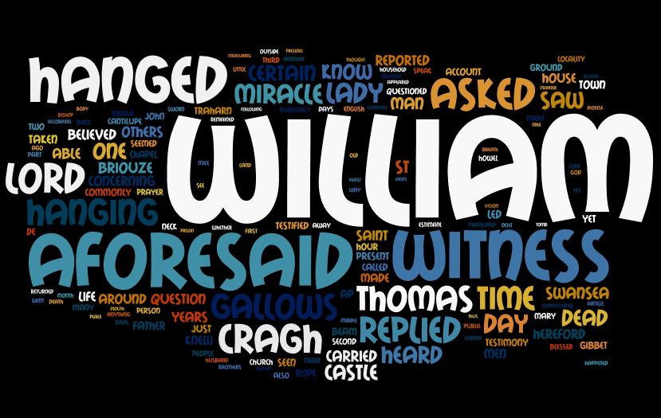
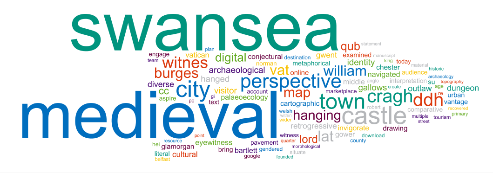
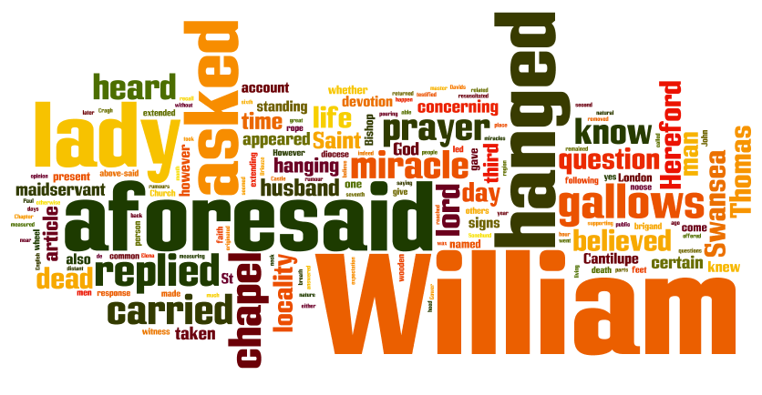
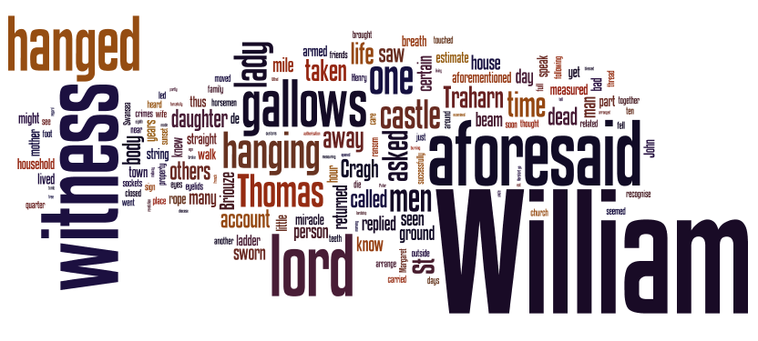

Blog
Medieval Swansea Word Clouds

I was interested to find, on the Research Councils UK website, information about our 'City Witness' research project presented in the form of both a short text summary and a Word Cloud (below). The Word Cloud is obviously automatically generated and some bits don't make too much sense out of context. But I was struck by what a good, instant, visual overview of our project this gives. I wondered what would happen if we made a Word Cloud out of the William Cragh text?

The image at the top of this Blog post is the result of pasting the entire draft translation of the William Cragh witness statements into Wordle. I've not interfered with the text in any way. What's interesting is the way it throws many of the 'procedural' words into the foreground: terms like 'aforesaid', 'asked', 'reported' and 'heard', which really do reflect the style and idiom of the highly legalistic prose. These are the elements which often get lost when we paraphrase or re-tell the story - but they're absolutely key to the concerns of the papal inquisitors with truth and authority.
I also generated Word Clouds just from the testimonies of Lady Mary de Briouze (the devout wife of Lord William, who prays for St Thomas to help Cragh) and John of Baggeham (Lord William's steward, who's concerned with law and order and keeping Swansea under control). Would we see any striking differences here?
Here's Lady Mary's Word Cloud:

And here's John of Baggeham's:

Do you spot any visible differences? How helpful are these Word Clouds in getting us to look at the textual evidence in new ways?
Share on Twitter Share on Facebook